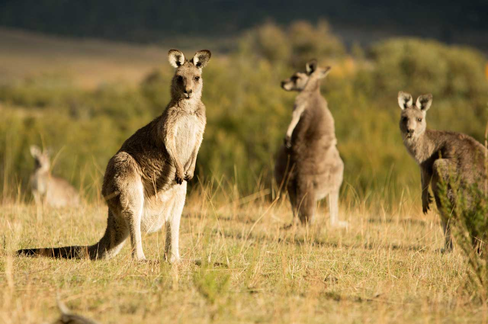
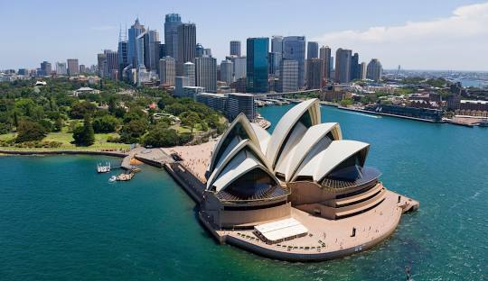
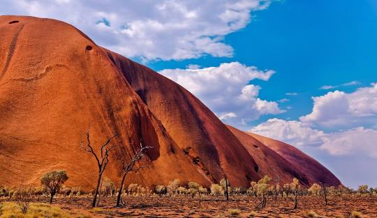
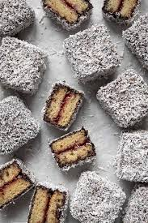
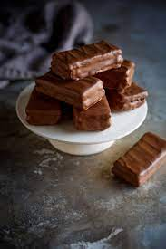

Kangaroos are iconic symbols of Australia, known for their powerful hind legs and distinctive hopping movement. These marsupials inhabit a variety of environments across the continent, from open grasslands to woodlands and scrublands. They are social animals, often seen in groups called mobs, which provide protection against predators. Kangaroos primarily feed on grasses and leaves, using their strong front paws to grasp food. Their unique reproductive system allows females to carry and nurse their young in pouches, making them fascinating examples of adaptation in the wild. With their impressive agility and endearing appearance, kangaroos continue to capture the hearts of people around the world.

The Sydney Opera House is an iconic architectural masterpiece located on the shores of Sydney Harbour in Australia. Designed by Danish architect Jørn Utzon, it features a series of striking white sail-like shells that create a stunning visual impact against the backdrop of the water and the Sydney skyline. Completed in 1973, the Opera House is not only a UNESCO World Heritage Site but also a vibrant cultural hub, hosting a wide array of performances, including opera, ballet, and concerts. Its innovative design and engineering have made it a symbol of creativity and artistic expression, attracting millions of visitors each year who come to admire its beauty and experience world-class performances.

Uluru, also known as Ayers Rock, is a monumental sandstone rock formation located in the heart of the Australian Outback. Rising dramatically from the flat desert landscape, it stands about 348 meters (1,142 feet) tall and stretches approximately 9.4 kilometers (5.8 miles) in circumference. Sacred to the Indigenous Anangu people, Uluru holds deep cultural significance and is often regarded as a spiritual site. The rock is renowned for its vibrant color changes throughout the day, particularly at sunrise and sunset, when it glows in shades of red and orange. Visitors are encouraged to engage with the local culture through guided tours and storytelling, fostering a deeper appreciation for the ancient traditions and natural beauty that define this iconic landmark.

